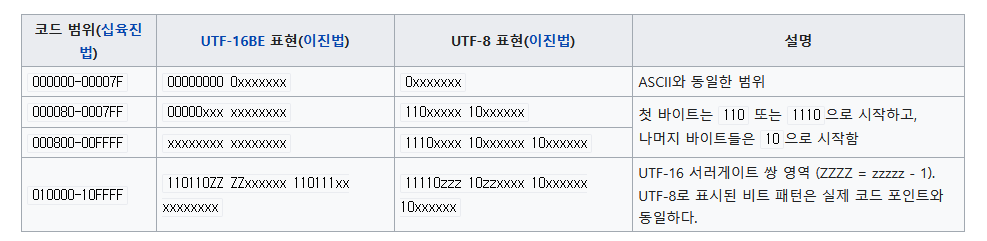

2010년도 이후 우리는 유니코드라고 불리는 인코딩 방식이 통일된 시대를 살아가고 있다.
문자열을 다루는 디테일한 방식에 대해 전부 알 필요는 없지만 프로그래밍 언어마다 문자열을 다루는 자료형의 차이를 이해하기 위해 문자열을 다루는 기본적인 방식은 알고 있어야 한다.
유니코드(Unicode)는 유니코드 협회(Unicode Consortium)가 제정하는 전 세계의 모든 문자를 컴퓨터에서 일관되게 표현하고 다룰 수 있도록 설계된 산업 표준이다.
이 표준에는 ISO 10646 문자 집합, 문자 인코딩, 문자 정보 데이터베이스, 문자를 다루기 위한 알고리즘 등을 포함하고 있다.
기본적으로 유니코드의 목적은 현존하는 문자 인코딩 방법을 모두 유니코드로 교체하는 것이다.
인코딩이란 어떤 문자나 기호를 컴퓨터가 이용할 수 있는 신호로 만드는 것이다.
이 신호를 입력하는 인코딩과 문자를 해독하는 디코딩을 하기 위해서는 미리 정해진 기준을 바탕으로 입력과 해독이 처리되어야 한다.
이렇게 인코딩과 디코딩의 기준을 문자열 세트 또는 문자셋(charset)이라고 한다.
이 문자셋의 국제 표준이 유니코드이다.
UTF-8은 1 byte(8 bit)에서 4 byte 까지의 가변 길이를 가지는 인코딩 방식이다.
UTF-8은 ASCII 문자들을 1바이트로 표현할 수 있기 때문에 한중일 문자와 표의 문자를 사용하지 않는 대부분의 문자열을 UTF-16보다 더 작은 크기로 표현할 수 있다.
UTF-8은 바이트 순서가 정해져 있기 때문에 바이트 순서 문자가 필요하지 않다.
UTF-16은 유니코드 코드 대부분을 16 bit 값으로 표현하는 인코딩 방식이다.
대부분에 속하지 않는 기타 문자는 32 bit(4 byte)로 표현하므로 UTF-16도 가변 길이라고 할 수 있으나 대부분은 2 byte로 표현한다.
UTF-16은 바이트 순서를 나타내기 위하여 바이트 순서 문자가 필요하다.
U+007F까지의 문자는 7 비트 ASCII 문자와 동일한 방법으로 표시되며 그 이후의 문자는 다음과 같은 4 byte까지의 비트 패턴으로 표시된다.

7비트 ASCII 문자와 혼동되지 않게 하기 위하여 모든 바이트들의 최상위 비트는 1이다.
영문 알파벳을 사용하는 대표적인 문자 인코딩으로 7 비트로 모든 영어 알파벳을 표현할 수 있다.
52개의 영문 알파벳 대소문자와 10개의 숫자와 32개의 특수 문자 그리고 하나의 공백 문자를 포함한다.